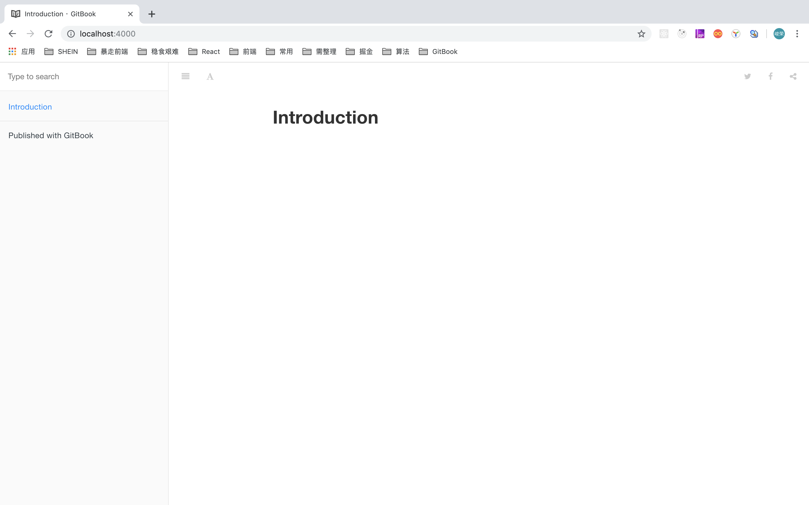

GitBook 初始化
gitbook是基于node.js的命令工具，,首先需要安装并配置好node.js环境,然后才能安装gitbook相关工具.
1. gitbook 环境预检查
1.1 git 环境
git 是免费开源的分布式版本控制系统,主要用于电子书的更新管理和团队协作,如果不需要将电子书托管到github 网站上,则可以不安装 git .
如果打印出 git 版本信息,则表示本机已安装 git 环境,跳过此步骤.
$ git --version
git安装配置教程请参考初识 git
1.2 node.js 环境
node.js 是 js 在服务端运行的环境基础,从而使得 js 从浏览器端延伸到服务端领域,而 gitbook 则是运行在 node.js 基础之上的命令行工具,因此必须先安装好 node.js 开发环境.
如果打印出 node.js 版本信息,则表示本机已安装 node.js 环境,跳过此步骤.
$ node -v
node.js安装配置教程请参考 node
2. gitbook 安装
2.1 gitbook-cli安装
gitbook-cli 是 gitbook 的脚手架工具,帮助我们更方便构建 gitbook 应用,当然也可以直接安装 gitbook ,只不过那样的话,略显麻烦,不推荐.
mac 上执行
$ sudo npm install -g gitbook-cli
window 上执行
$sudo npm install -g gitbook-cli
安装成功后会带有 gitbook 命令,现在再次运行下 gitbook -V 查看版本信息.
# 打印出 `CLI` 和 `GitBook` 版本信息即可,安装版本可能已经大于 `2.3.2`
$ gitbook -V
CLI version: 2.3.2
GitBook version: 3.2.3
2.2 安装 GitBook Editor
gitbook官方客户端编辑器,支持 windows, mac 和 linux ,主要用于可视化编辑文档,组织文档结构.
下载相应平台的 GitBook Editor,正常安装即可.
gitbook 的使用方法大致可以有三种,而 GitBook Editor 编辑器只是其中一种,所以这一步是可选的.
- 使用 gitbook-cli 脚手架提供的各种命令直接在命令行管理 gitbook,适合一定编程经验的软件从业人员.
- 使用 GitBook Editor 编辑器管理 gitbook ,适合无任何编程的文学创作者.
- 使用 gitbook.com 官网在线管理 gitbook ,适合不具备本地开发环境的萌新体验者.
3. gitbook命令
3.1 常用命令
- 安装 GitBook：npm i gitbook-cli -g
- 初始化 GitBook 项目：gitbook init
- 安装 GitBook 依赖：gitbook install
- 开启 GitBook 服务：gitbook serve //gitbook serve --port 2333 指定端口
- 打包 GitBook 项目：gitbook build
- GitBook 命令行查看：gitbook -help
- GitBook 版本查看：gitbook -V
3.2 目录介绍
当我们执行完 npm i gitbook-cli -g 后，就开始进行gitbook开发，找一个空文件夹，初始化一个 GitBook 项目：gitbook init，目录会生成一个 README.md 内容文件和一个 SUMMARY.md 目录文件如下。
- GitBook
- README.md
- SUMMARY.md
SUMMARY.md [链接](链接地址) 表示跳转链接，即 GitBook 会根据你的 SUMMARY 自动帮你生成左侧菜单栏的目录
README.md 书写文档，在SUMMARY中显示
最后，我们在 终端 输入 gitbook serve 即可开启一个 localhost:4000 的服务，请在浏览器中输入 http://localhost:4000 即可访问服务。

4. 总结
gitbook 基于 node.js 开发环境,因此首先要安装好 nodejs 环境,其次再使用 node.js 提供的 npm 包管理工具来安装 gitbook. 只需运行 sudo npm install -g gitbook-cli 即可安装,接着运行 gitbook -V 查看安装版本信息确认已经安装成功. 至此 gitbook 的必要开发环境已经准备妥当,接下来让我们赶紧体验一下 gitbook 的魅力吧!